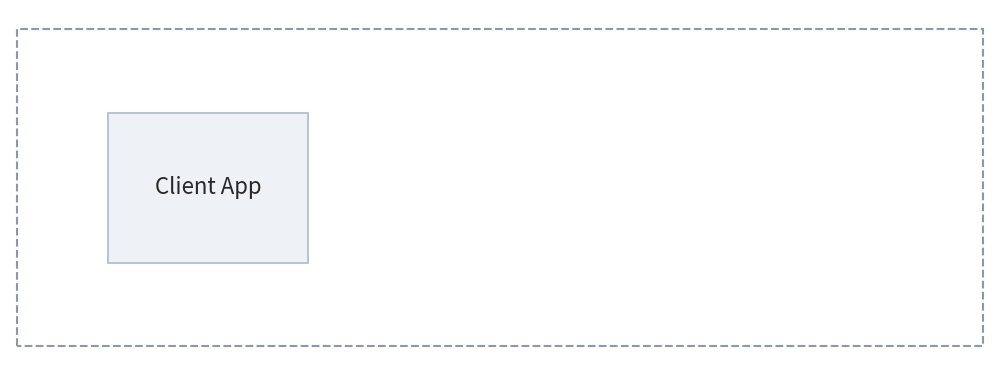

Animations Overview (APNG & WebP)
Drawlib provides native support for generating multi-frame animations in both Animated Portable Network Graphics (APNG) and Animated WebP formats.
Animations empower developers and AI coding agents to create clean, high-framerate, multi-step architectural illustrations, data visualizations, and interactive walkthroughs using declarative Python code.
1. Supported Animation Formats
| Format | Extension | Primary Advantage | Best Use Cases |
|---|---|---|---|
| APNG | .png |
Universal Compatibility: Renders natively in all modern web browsers and GitHub Markdown previews. Safe static fallback to Frame 1 in PDF compilers and legacy viewers. | GitHub READMEs, markdown documentation, printable technical documents. |
| Animated WebP | .webp |
Ultra-Compact File Size: Typically ~50% smaller than APNG with lossless quality. | Web-hosted documentation sites, high-performance web applications, mobile platforms. |

2. Imports & Canvas Lifecycle
All animation functionality is centered around the Animation class in drawlib.anim:
from drawlib.anim import Animation
from drawlib.canvas import save, setup
from drawlib.shapes import circle, rectangle
from drawlib.styles import Styles
Automatic Canvas Coordination
When an Animation instance is initialized, it automatically registers itself with the active Drawlib canvas (canvas._active_animation). Calling standard save() captures all accumulated frames into an animated file without requiring separate export methods:
anim = Animation(fps=10.0)
with anim.frame():
circle((50, 50), radius=10, style=Styles.Primary)
# Saves as APNG:
save("animation.png")
# Or saves as Animated WebP:
save("animation.webp")
3. The Animation Class API
3.1. Initialization
anim = Animation(
fps: float | None = None,
frame_rate: float | None = None,
loop: int = 0,
)
| Parameter | Type | Default | Description |
|---|---|---|---|
fps |
float | None |
10.0 |
Target playback frame rate in frames per second (e.g. 10.0 means 10 fps). |
frame_rate |
float | None |
10.0 |
Alias for fps. If both are specified, fps takes precedence. |
loop |
int |
0 |
Number of animation loops. 0 means continuous infinite looping. |
4. Defining Frames
4.1. Context Manager: with anim.frame() (Recommended)
The with anim.frame() context manager clears the canvas at the start of the block (when clear=True) and captures the rendered frame at the end of the block:
with anim.frame(
duration: float | None = None,
clear: bool = True,
):
# Standard Drawlib drawing calls
circle((50, 50), radius=10, style=Styles.Primary)
| Parameter | Type | Default | Description |
|---|---|---|---|
duration |
float | None |
None |
Display duration for this frame in seconds (e.g. 1.5 for 1.5 seconds). If None, defaults to 1 / fps (e.g. 0.1s for 10fps). |
clear |
bool |
True |
Whether to clear existing canvas shapes before drawing this frame. Defaults to True. |
4.2. Imperative Method: anim.add_frame()
For procedural code where context managers are less convenient:
circle((x, y), radius=5, style=Styles.Primary)
anim.add_frame(duration=0.5, clear=True)
5. Two Standard Animation Loop Idioms
When animating technical illustrations, prefer clear=True (default per-frame redraw) over clear=False whenever elements move, change styles, or toggle highlights. Drawlib's unified component lifecycle (add() -> draw()) provides two clean loop patterns depending on the module:
| Target Module | Recommended Loop Pattern | Guide |
|---|---|---|
Primitives (shapes, lines, text, icons, styles) |
Pattern A: In-Frame Build Compute per-frame coordinates or interpolated colors ( get_intermediate_colors) and draw inside with anim.frame():. |
Animating Primitives & Colors |
SmartArts (ChevronProcess, Table, TreeNode, etc.) |
Pattern A / B: Pass show=(i <= step) to add() (or mutate node.show on trees) and call draw(). Hidden items still reserve layout slots. |
Animating SmartArts |
Charts (BarChart, LineChart, PieChart, etc.) |
Pattern A: In-Frame Build Toggle add(..., show=...) for series reveal (auto-scales stay locked), or pin max_value and interpolate data values. |
Animating Charts |
Diagrams & Graphs (FlowDiagram, ArchitectureDiagram, drawlib.graph) |
Pattern B: Pre-Build & Mutate Build topology once outside the loop, then mutate .show, .style, or .draw_ratio and call draw(xy, scale) in each frame. |
Animating Diagrams & Graphs |
6. Design Principles for Technical Animations
- Poster Frame Principle (Static & PDF Compatibility): Standard image viewers and vector PDF exports render Frame 1 as a static fallback image. Never leave Frame 1 completely blank—always show the baseline container or initial node on Frame 1.
- Hold the Final Completed Frame:
To give readers time to absorb the completed diagram before the loop restarts, set an extended
duration(2.0to3.0seconds) on the final frame. - Embedded Markdown Blocks:
Any
drawlibblock that initializesAnimation()automatically outputs an animated.png(APNG) or.webpfile duringdrawlib build. - Built-in Lossless Compression:
- APNG (
.png): Automatically crops sub-frame delta bounding boxes and applies maximum Zlib (compress_level=9) + Huffman (optimize=True) compression. - Animated WebP (
.webp): Encodes with lossless sub-frame minimization (lossless=True,minimize_size=True), typically ~50% smaller than APNG.
- APNG (
7. Interactive Playback Control in Presentation Slides (slide)
In 16:9 presentation slide decks (drawlib init slide), animated .png (APNG) and .webp blocks can be controlled interactively via <canvas> playback options on the drawlib fence:
```drawlib file:pipeline.webp anim-trigger:click anim-loop:once anim-pause:2,4
from drawlib.anim import Animation
...
```
| Option | Values | Default | Description |
|---|---|---|---|
anim-trigger |
auto | click |
auto |
auto starts playback as soon as the slide appears; click holds on Frame 0 (READY) until the presenter clicks the diagram. |
anim-loop |
once | infinite |
infinite (once when anim-pause is set) |
once stops on the final frame (ENDED, click to replay from Frame 0); infinite loops continuously. |
anim-pause |
Comma-separated 0-based frame indices (e.g. 2,4) |
None |
Pauses playback (PAUSED) immediately upon rendering each listed frame index. Clicking the diagram resumes playback from frame + 1 until the next pause point or end. |